Substitution Reactions
Substitution involves the replacement of one group with another.
SN2
SN2 reaction occur between (usually) alkyl halidy&nucleophile
Mechanism of SN2 is concented; reaction occurs via backside attack.
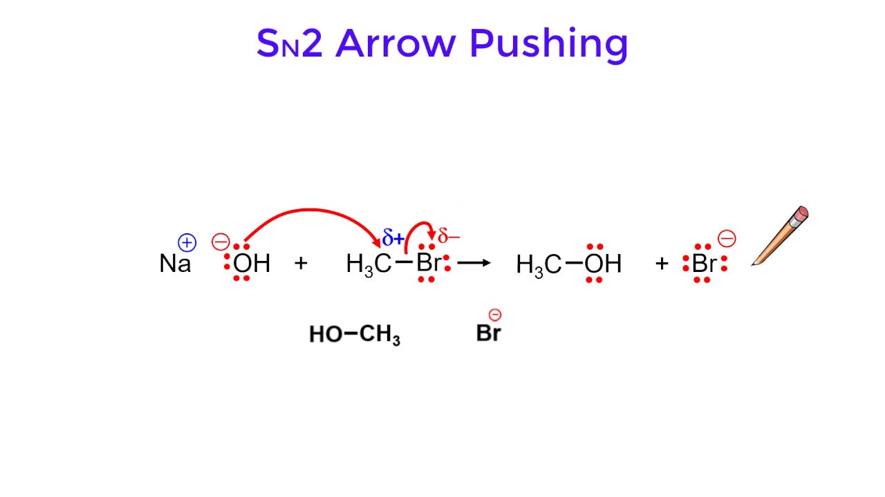Factors that affect the Rate of SN2:
- Electrophile that are less sterically hindered undergo SN2 faster.
- Trend: methyl > 1° >> 2° >>> 3° (no rxn expected) 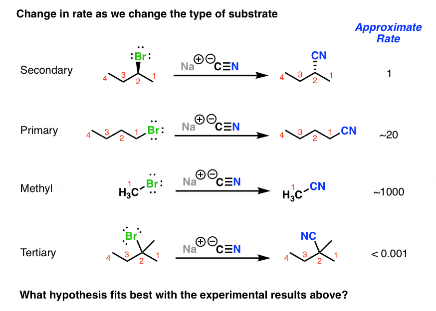
- Better leaving groups result in faster SN2 rxns. Better leaving groups tend to be weak (stable) species.
- Trend: I⁻ > Br⁻ > Cl⁻
- Strong nucleophile result in faster SN2. Charged nucleophile are typically stronger.
- Basicity can correlate with nucleopilicity(more basic = more nucleopilicity)
- NH2 > OH > F
- Larger species are more polarizalble and can be better nucleophile.
- SeH > SH > OH
- Sterically hindered nucleophile are poor nucleophile.
- SN2 occurs faster in polar aprotic solvent.
SN2 rxn is stereo specific; different stereoisomers yeild a differnt stereoisomers. Backside attack result in inversion of stereochemistry.
- R-reactant → S-Product
- S-reactant → R-Product
SN1
SN1 reaction is a unimolecular nucleophilic substitution.
Different from SN2, SN1 reaction will form a carbocation intermediate.
Mechanism:
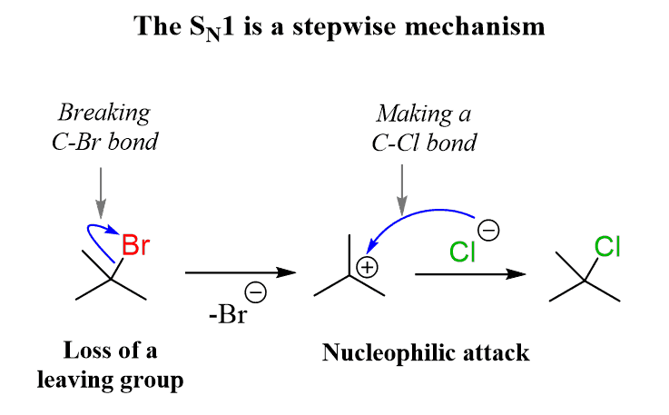Factors that affect the Rate of SN1:
- More substituted alkyl halides react faster. Alkyl groups donate electron density via induction effect&stabilize carbocation
- SN1 occurs faster with more stable carbocation
- Trend: 3° > 2° >> 1° >>>methyl (no rxn expected)
- SN1 occurs faster with better leaving groups
- SN1 is accelerated in polar portic solvent
SN1 reactions at stereocenters result in a racemic mixture. Which racemic mixtures contain equal amounts of each enantiomers.
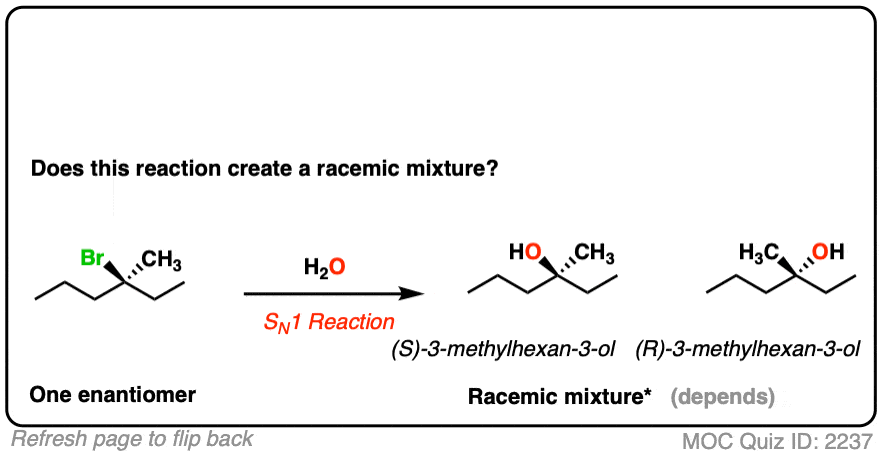Elimination Reactions
Elemination reaction involve the loss of atoms&(usually) creation of π bonds.
E1
E1 is a unimolecular elimination
Like SN1 reaction, E1 also produce carbocation intermediate.
Mechanism:
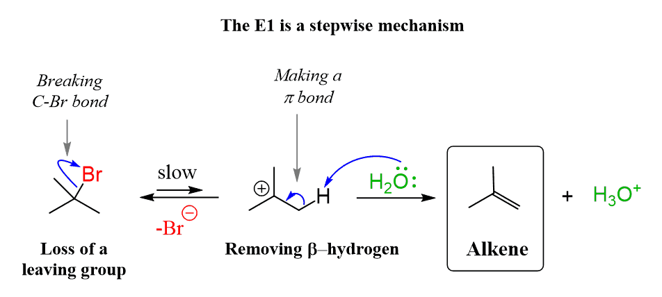Factors that affect the Rate of SN1 also affect the Rate of E1, since they have the same Rate Limiting(Determining) Steps.
E1 is regioselective; one constitutional isomer will be the major product.
E1 is under thermodynamic control; the major product is more stable.
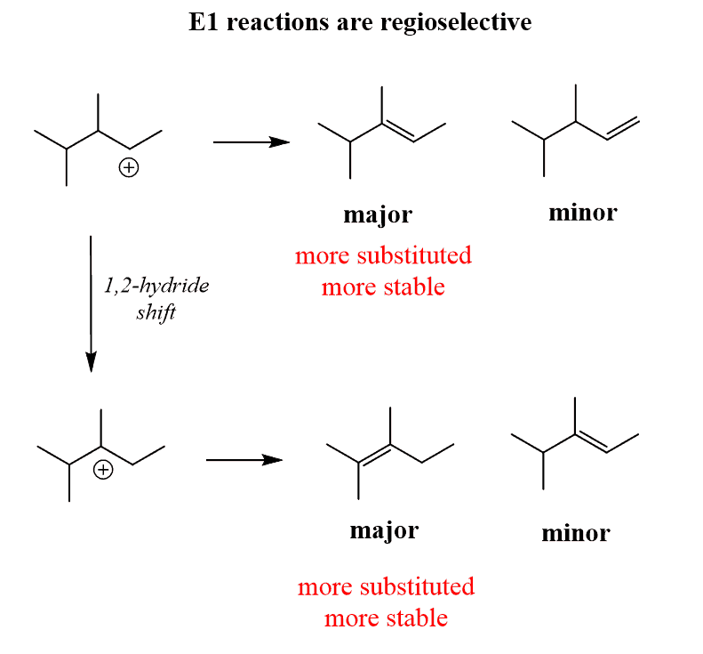E2
E2 reaction is bimolecular elimination.
E2 require an antiperiplanar geometry.
Mechanism of E2 is concereted:
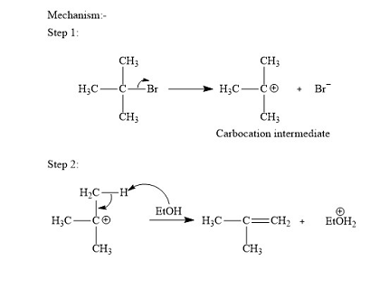Regioselectivity of E2 occurs when multiple sets of protons can be removed.
Small bases give the more substituted alkene (zaitsev).
Big bases give the less substituted alkene. (Hoffman)
Trans Alkenes are favored over Cis Alkenes.
E2 reaction is stereo specific:
- Only diastereomer is observed as product due to antiperiplanar.
- In cyclohexanes, the C-H&leaving group must be trans&diaxial
Alkenes and Addition Reaction
Alkenes contain the C-C double bond. π bonds are weaker than igma bonds due to less orbital overlap.
The stability of Alkenes can be measured using heat of hydrogenation.
Factors affecting alkene stability:
- More substituted → more stable
- Trans are more stable - because they are less sterically hindered
- Alkenes in smaller are less stable due to ring strain
Addtion of Alkenes
Hydrohalogenation
Hydrohalogenation involves the addition of H-X across an alkenes.
Mecahnism:
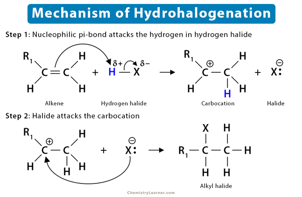Hydrohalogenation follows the Markamikov Rule.
- The halide(nucleophile) ends up on more substitued carbon.
- The more stable carbocation form faster.
Hydration
Hydration involves the addition of H2O.
At stereocenter, the outcome is racemic.
Mecahnism:
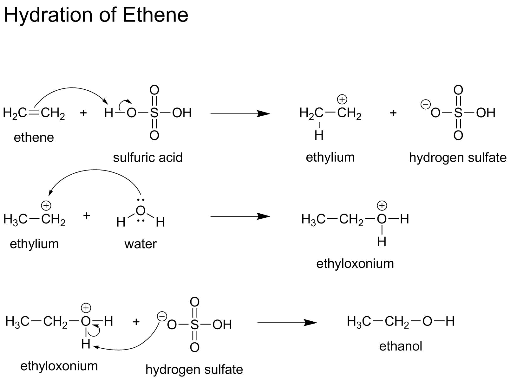Hydroboration Oxidation of Alkenes
Hydroboration Oxidation gives anti-Markovnikov hydration product.
Hydroboration is a conccerted reaction and exhibited regioselectivity&stereospecificity
Mechanism:
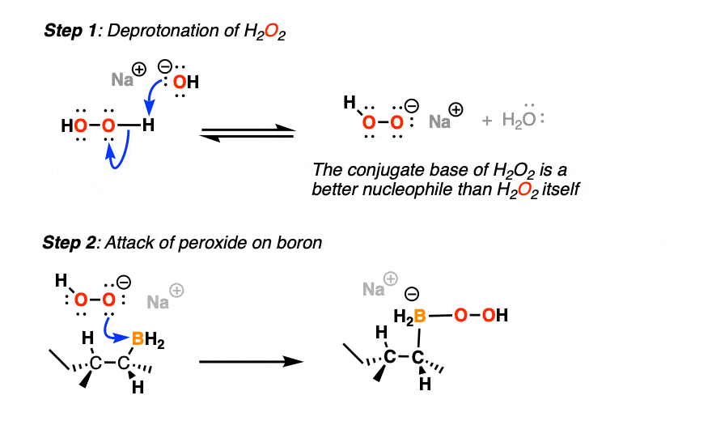Hydrogenation
Catalytic hydrogenation involves addition of H-H across a double bond.
The reaction exhibits syn(on the same side) addition.
Mechanism:
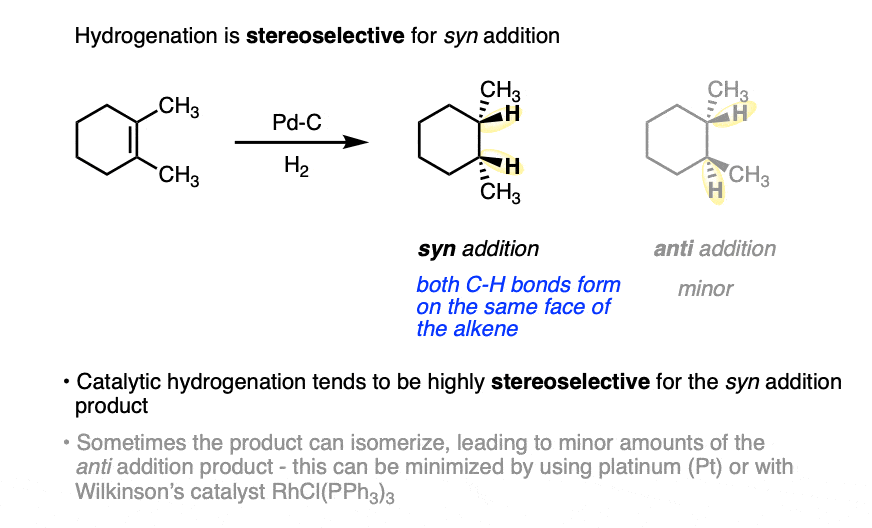Halogenation
In Halogenation reactions, halogens add across alkenes and addition is not anti.
Mechanism:
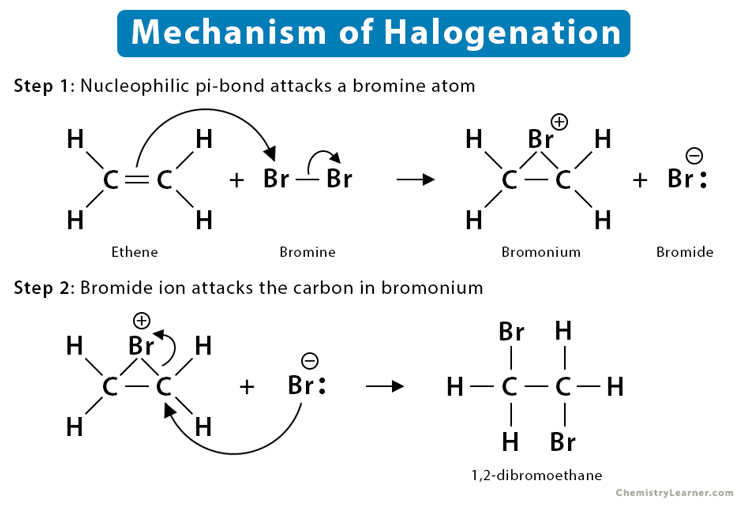In the presence of H2O or alcohols, halohydrin are formed.
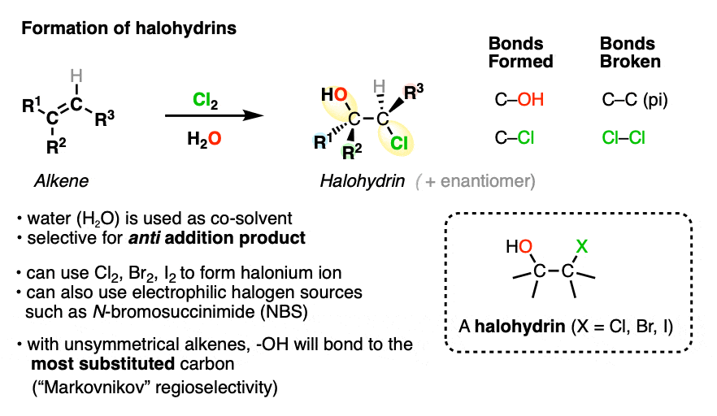Epoxides
Epoxides are 3-membered rings with one oxygen.
Epoxides are made from alkenes using a peroxyacid;stereochemistry of alkene is retained.
Mechanism:
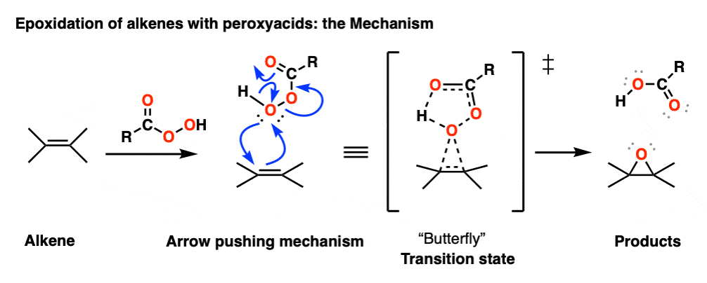Epoxides are opened up by nucleophile.
- In acidic conditions: nucleophile attack the more hindered carbon.
- In basic conditions: nucleophile attack the less hindered carbon.